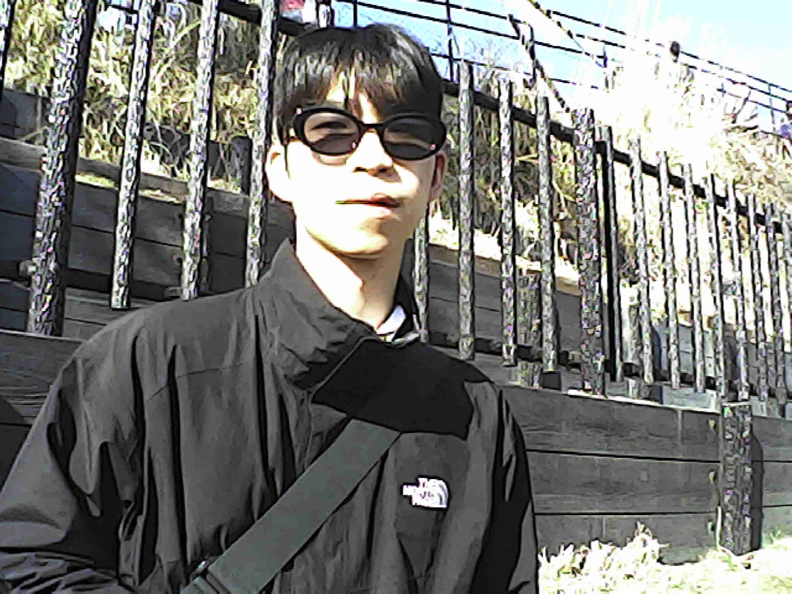
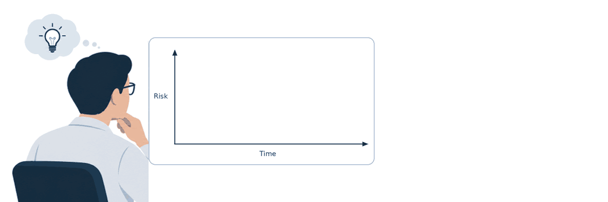

Submitted
From Hemodynamic Stability to Survival: A Validated Multi-Agent Reinforcement Learning Framework for ICU Shock Management with Machine-in-the-loop System
Collaborated with UPMC

Hello, my name is Jeong Eul Kwon, and I am a integrated M.S./Ph.D. student at Korea University, advised by Hyo Kyung Lee. My primary research areas are (Irregularly sampled) multivariate time-series modeling and time series counterfactual estimation.

Collaborated with UPMC
Collaborated with KUMC
Collaborated with UPMC
Collaborated with KUMC